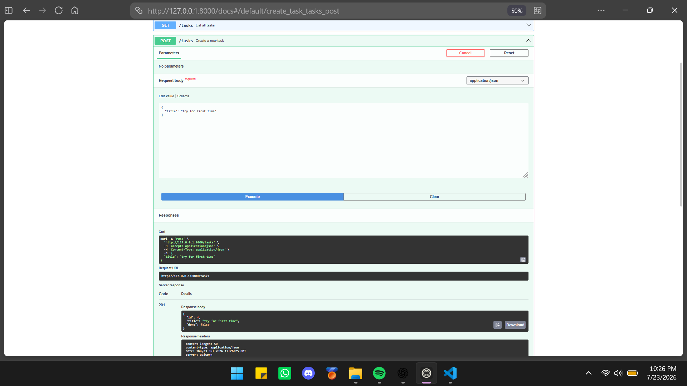
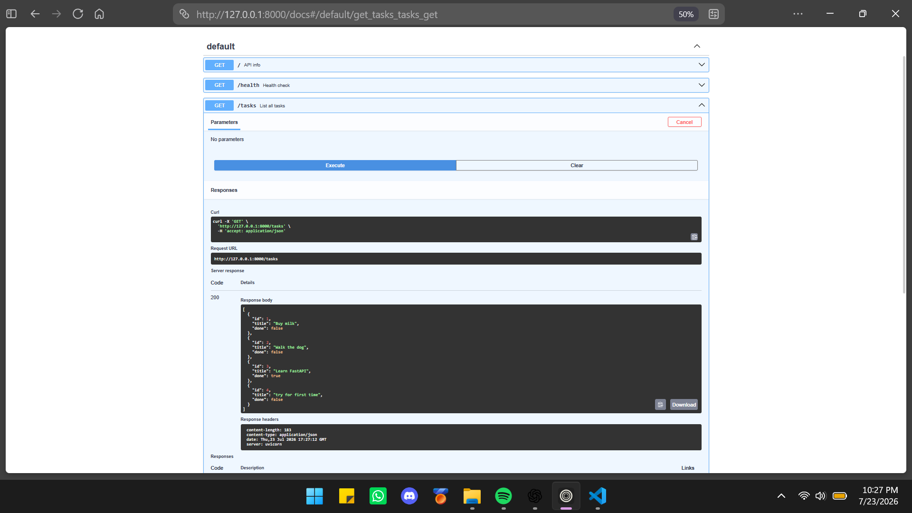
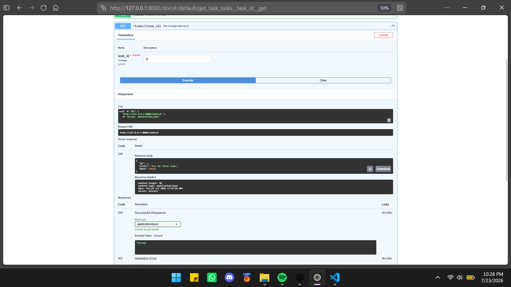
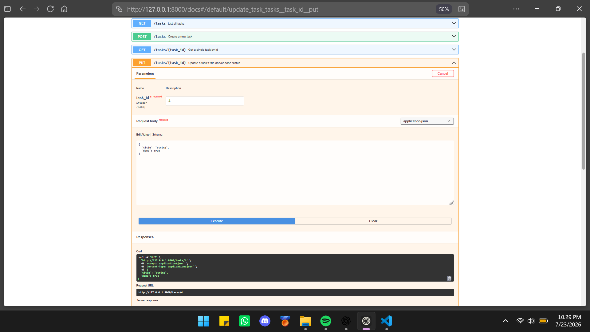
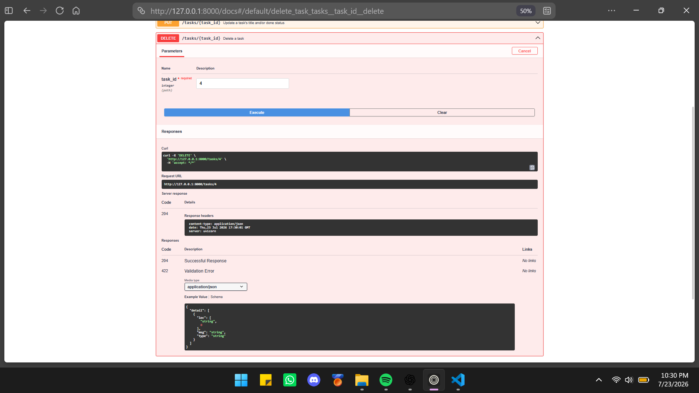
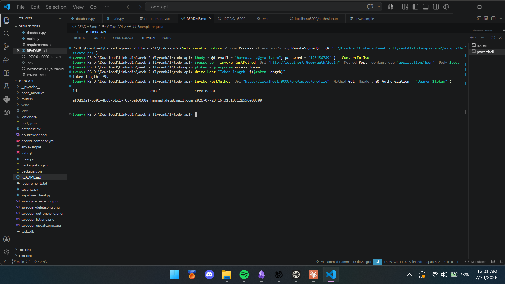

Case 03 · Foundational proof
I wanted to find out how hard it actually is to build a real backend from scratch — not just wire up a model to a UI, which is what most of my projects had done before. I didn't know going in what "hard" meant here: was it the code, the testing, the edge cases?
Built a full CRUD API in FastAPI — create, read, update, delete on a task list — testing each stage before moving to the next instead of writing it all up front. The part that actually slowed me down wasn't the endpoints themselves, it was getting HTTP status codes right: I wasn't sure which code fit which situation (missing input vs. unknown ID vs. success), so I looked up the spec and matched each case deliberately instead of guessing.
Later I added Supabase Auth on top: signup, login, logout, and JWT-protected routes (/protected/profile, /protected/dashboard) behind a reusable auth guard, with bearer-token auth wired into the Swagger docs. Debugged real issues along the way — PowerShell vs. curl syntax differences, a missing Postgres container, Supabase's email confirmation and rate limits, and stale tokens sitting in Swagger's Authorize dialog.

Create — 201 on success

List all tasks

Get one — 404 on unknown id

Update

Delete — 204 on success

Auth flow verified end-to-end — signup → login → JWT → protected route
main.py wires up three route groups: routers/public.py (open, no auth), routers/auth.py (signup/login/logout, talks to Supabase via supabase_client.py), and routers/protected.py (requires a valid JWT). security.py holds the reusable auth guard — a FastAPI dependency that reads the Authorization: Bearer <token> header, asks Supabase to verify it, and either passes the request through or returns 401. The task data itself lives in SQLite locally / Postgres via Supabase, behind database.py. Nothing here calls out to a model — this case is pure backend engineering: routing, validation, status codes, and auth.
I can now build a full REST API from scratch — not just call one — and I understand why each status code exists instead of copying a pattern. Verified working end-to-end via PowerShell and Swagger UI.